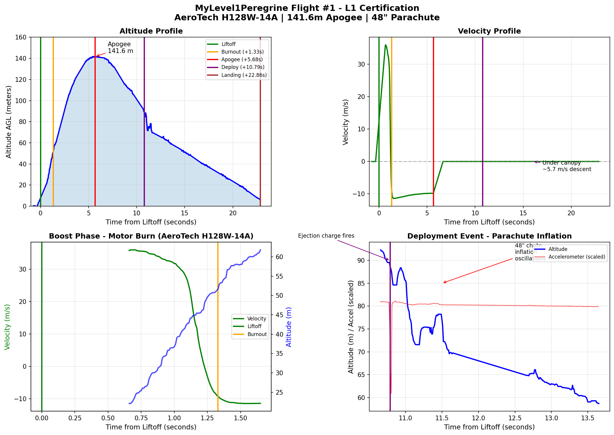

Flight #1 Analysis¶
Detailed analysis of CATS Vega telemetry data from the L1 certification flight.
Problem Statement¶
Simulation predicted 208m apogee, flight computer logged 141.58m — a 32% shortfall.
Flight Event Timeline¶
Data from CATS Vega log file fl001.cfl:
| Event | Time (ms) | From Liftoff | Altitude (m) | Velocity (m/s) |
|---|---|---|---|---|
| Liftoff | 278340 | 0.00s | 0 | 0 |
| Burnout | 279670 | 1.33s | 39.84 | 45.69 |
| Apogee | 284020 | 5.68s | 141.58 | 0 |
| Drogue | 284320 | 5.98s | 141.41 | — |
| Main | 284630 | 6.29s | 141.43 | — |
| Deployment (accel) | 289145 | 10.80s | — | — |
Burn time: 1.33s (matches H128W specification of ~1.4s)
Motor delay: 9.47s (from burnout to deployment shock in accelerometer)
Deployment after apogee: 5.12s
Telemetry Charts¶

Altitude, velocity, boost phase, and parachute deployment profiles from CATS Vega data.
Accelerometer Deployment Signature¶
The parachute deployment is clearly visible in the raw accelerometer data as a sudden deceleration shock:
| Time (ms) | From Liftoff | Raw Accel X | Notes |
|---|---|---|---|
| 289115 | +10.78s | -29698 | Pre-deployment baseline |
| 289125 | +10.79s | -27657 | Shock begins |
| 289135 | +10.79s | -24535 | Deceleration increasing |
| 289145 | +10.80s | -22717 | Peak shock (~7000 LSB change) |
| 289155 | +10.81s | -29504 | Recovery to descent |
The ~7000 LSB change in 30ms represents the sudden deceleration as the parachute opens and catches air. This provides independent confirmation of deployment timing separate from the barometric data.
Note: The actual motor delay (9.47s) was longer than intended (8s), possibly due to cold weather (-5°C) slowing the delay grain burn rate.
Root Cause Analysis¶
1. Mass Discrepancy (Primary Cause)¶
Physics verification using burnout conditions:
- Burnout velocity: 45.69 m/s at 39.84m altitude
- Theoretical maximum (no drag): \(h = \frac{v^2}{2g} + h_0 = \frac{45.69^2}{2 \times 9.81} + 39.84 = 146\text{m}\)
- To reach 208m would require burnout velocity of ~58-60 m/s
Conclusion: Rocket was significantly heavier than simulation assumed. Additional mass from:
- Two flight computers instead of one
- Additional LiPo batteries
- Other small items not accounted for
2. Temperature Compensation Gap¶
The CATS Vega MS5607 barometric sensor has two temperature-related behaviors:
| Component | Status | Notes |
|---|---|---|
| MS5607 sensor temperature compensation | ✅ Working | Internal calibration |
| Ambient air temperature in altitude formula | ❌ Hardcoded 15°C | TEMPERATURE_0 constant |
Flight conditions: -5°C
The barometric altitude formula uses temperature to calculate air density. Using 15°C instead of -5°C causes approximately +7.5% altitude overestimate (~10m at this altitude).
Temperature-corrected apogee: ~132m true altitude
3. Venting Lag¶
The rocket body has no venting holes, causing pressure equalization lag during rapid altitude changes.
Evidence from telemetry:
- Altitude plateau at apogee: 141.4-141.6m sustained for ~1 second
- Pressure oscillated between 100680-100730 Pa for 1.5s around apogee
- Ascent velocities appear artificially low
- Only 4.6m apparent drag loss vs expected 15-25m for this rocket/velocity
The internal pressure cannot equalize fast enough, causing the barometer to "see" incorrect ambient pressure.
Timing Analysis¶
| Parameter | Simulated | Actual | Difference |
|---|---|---|---|
| Time to apogee | 6.0s | 5.68s | -0.32s (5% faster) |
| Motor delay | 8.0s | 9.47s | +1.47s (18% slower) |
The simulation was accurate on flight timing — the altitude shortfall is primarily from mass discrepancy, not aerodynamics. The longer motor delay is likely due to cold weather affecting the delay grain burn rate.
Recommendations¶
Hardware¶
- Add venting holes to rocket body for accurate barometric readings
- Verify actual flight mass vs simulation input before future flights
- Account for cold weather when setting motor delays (add margin)
Firmware¶
Potential code improvement in CATS firmware — use MS5607 temperature reading in calculate_height() instead of hardcoded 15°C constant.
Relevant code locations (CATS firmware repository):
| File | Purpose |
|---|---|
flight_computer/src/sensors/ms5607.hpp |
Barometer driver |
flight_computer/src/control/data_processing.cpp |
Height calculation |
flight_computer/src/config/control_config.hpp |
Config constants (TEMPERATURE_0) |
flight_computer/src/control/kalman_filter.cpp |
State estimation |
Firmware repository: tonuonu/cats-embedded
Summary¶
| Factor | Effect | Correctable |
|---|---|---|
| Mass discrepancy | Primary cause of altitude shortfall | Pre-flight weighing |
| Temperature compensation | +7.5% overestimate (~10m) | Firmware fix |
| Venting lag | Distorted pressure readings | Add vent holes |
| Cold weather delay | +18% longer burn time | Add safety margin |
Despite the altitude discrepancy, the flight was successful and achieved L1 certification.